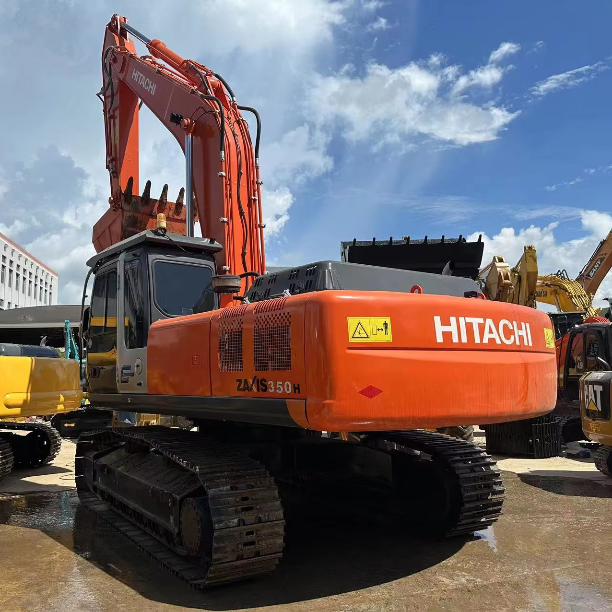

Refurbished Hitachi Zaxis 350 Excavator
The Hitachi Zaxis 350 Excavator is a high-performance machine designed to handle demanding construction, mining, and material handling tasks. Known for its powerful engine, advanced hydraulic systems, and outstanding fuel efficiency, the Zaxis 350 excels in various applications, including deep excavation, grading, and heavy lifting. When refurbished, this machine offers the same top-notch performance as a new unit but at a significantly lower cost, making it a smart choice for businesses and contractors looking to maximize their investment.
Honestly, it's almost impossible to buy a brand new excavator from China. They either don't exist or are made in China. If a Chinese seller tells you their Caterpillar/Komatsu/Volvo/Kobelco/Hitachi is brand new, they're lying. Therefore, a refurbished excavator is your best bet.

Here are the detailed specifications for a refurbished Hitachi Zaxis 350 excavator (ZX350LC-3 or ZX350LCH):
Operating Weight and Dimensions
- Operating Weight: ~34,000–35,000 kg
- Transport Length: ~11.2–11.4 meters
- Transport Width: ~3.19 meters
- Transport Height: ~3.4–3.6 meters
- Tail Swing Radius: ~3.8 meters
- Track Width: 600–800 mm standard
- Undercarriage: Long carriage (LC) or heavy-duty (LCH) variant
Engine and Powertrain
- Engine Model: Isuzu AH-6HK1X (Tier 2 or Tier 3 compliant)
- Rated Power Output: ~202–210 kW (271–282 hp) @ 1,800 rpm
- Fuel Tank Capacity: ~500–550 liters
- Travel Speed: ~5.0 km/h
- Swing Speed: ~9.0 rpm
- Drive Type: Hydrostatic with planetary final drives
Hydraulic System
- Main Pump Type: Dual axial piston pumps with HIOS III hydraulic system
- Flow Rate: ~2 × 360–380 L/min
- System Pressure: Up to 34.3 MPa
- Hydraulic Oil Capacity: ~500 liters
- Efficiency Features:
- Boom regenerative circuit
- Swing priority valve
- Auto hydraulic warm-up
Performance Metrics
- Bucket Capacity: 1.4–1.8 m³ (SAE heaped)
- Max Digging Depth: ~7.5–8.0 meters
- Max Reach (Horizontal): ~11.5–12.0 meters
- Max Dump Height: ~7.5–8.0 meters
- Bucket Digging Force: ~210–230 kN
- Arm Digging Force: ~160–180 kN
Cab and Operator Features
- Cab Type: ROPS/FOPS certified with reinforced structure
- Display: LCD monitor with diagnostics and fuel tracking
- Controls: Pilot-operated joysticks with auxiliary hydraulic circuit
- Comfort: Adjustable air-suspension seat, HVAC, low-noise cab
- Visibility: Wide glass area, rear-view camera, LED work lights
Attachments Compatibility
- Standard Bucket: 1.4–1.8 m³
- Optional Tools: Rock breaker, demolition shear, ripper, compactor
- Quick Coupler: Heavy-duty hydraulic coupler
Refurbishment Scope
Refurbished ZX350 units typically include:
- Engine Overhaul: Turbocharger, injectors, cooling system
- Hydraulic Restoration: Pump recalibration, valve block testing, hose replacement
- Electrical Diagnostics: Monitor, sensors, wiring harness
- Cab Reconditioning: Seat, joysticks, HVAC, repainting
- Structural Repairs: Boom/bucket welding, bushing replacement, undercarriage rebuild
Overview of the Hitachi Zaxis 350 Excavator
The Hitachi Zaxis 350 is a large, tracked hydraulic excavator designed for high productivity and durability. Its robust engine and advanced hydraulic system make it capable of handling a wide range of heavy-duty tasks with ease. Whether you need to dig trenches, lift heavy materials, or perform grading, the Zaxis 350 is built to tackle these tasks efficiently and reliably.
Refurbished Zaxis 350 excavators undergo an extensive reconditioning process to restore them to factory specifications. This process includes replacing worn components with genuine Hitachi parts, ensuring the machine operates like new, but at a more affordable price.
Key Specifications of the Hitachi Zaxis 350 Excavator
The Hitachi Zaxis 350 is designed for high performance in a range of tough applications. Here are the key specifications:
-
Operating Weight: Approximately 35,000 - 38,000 kg (77,000 - 84,000 lbs)
-
Engine Power: 270 hp (201 kW)
-
Max Digging Depth: Up to 7.3 meters (23.9 feet)
-
Maximum Reach: 10.3 meters (33.8 feet)
-
Bucket Capacity: Typically 1.5 - 2.0 cubic meters (53 - 71 cubic feet)
-
Fuel Tank Capacity: 500 - 600 liters (132 - 158 gallons)
-
Travel Speed: Up to 5.5 km/h (3.4 mph)
These specifications give the Zaxis 350 the power and reach needed for a variety of demanding tasks. Its fuel-efficient engine and hydraulic system ensure that it delivers high productivity while maintaining low operational costs.
Performance and Efficiency of the Zaxis 350
The Hitachi Zaxis 350 is designed for optimal performance in heavy-duty applications. Its powerful engine and highly efficient hydraulic system provide smooth operation and increased productivity, making it a reliable choice for construction, mining, and material handling.
Performance Highlights:
-
Efficient Hydraulics: The Zaxis 350 is equipped with an advanced hydraulic system that delivers precise control over the boom, arm, and bucket. This results in faster cycle times and improved productivity, especially when dealing with tough soil or heavy materials.
-
Fuel Efficiency: One of the key features of the Zaxis 350 is its fuel-efficient engine. Designed to reduce fuel consumption while maintaining high power output, the Zaxis 350 ensures that operators can work for extended hours without the need for frequent refueling.
-
Heavy-Duty Lifting and Digging: With its powerful engine and hydraulic system, the Zaxis 350 excels in lifting and digging tasks. It has the capacity to perform deep excavation, grading, and heavy lifting with ease, making it suitable for large-scale projects.
-
Precision Control: The Zaxis 350 offers precise control for operators, allowing them to work in confined spaces or execute delicate tasks with accuracy. This precision makes it ideal for projects that require high-level control and efficiency.
Durability and Longevity of the Zaxis 350
Hitachi equipment is known for its long-lasting durability, and the Zaxis 350 is built to withstand tough working conditions. From challenging terrains to heavy workloads, this excavator is designed to handle demanding environments while maintaining high performance over the long term.
Durability Features:
-
Reinforced Undercarriage: The Zaxis 350 features a durable undercarriage that is designed to handle rough terrain and heavy loads. The tracks, sprockets, and rollers are built for long-term durability, ensuring stable operation even in challenging conditions.
-
Long-Lasting Engine: Powered by a reliable and high-performance engine, the Zaxis 350 can provide thousands of hours of service with proper maintenance. The engine is engineered to withstand high-stress conditions, ensuring consistent performance over time.
-
Robust Hydraulic System: The hydraulic system of the Zaxis 350 is built for heavy-duty applications and can withstand high pressures and intense use. Regular maintenance of the hydraulic system ensures that the machine operates efficiently with minimal downtime.
Comfort and Safety of the Zaxis 350
The Zaxis 350 prioritizes operator comfort and safety, with a spacious cabin, advanced visibility, and noise and vibration reduction features. The machine is designed to provide a safe and comfortable environment for the operator, even during long working hours.
Comfort and Safety Features:
-
Ergonomic Cabin: The Zaxis 350 comes with a spacious, ergonomic cabin that offers excellent visibility of the work area. The adjustable seating and intuitive controls reduce operator fatigue and enhance overall comfort during extended shifts.
-
Noise and Vibration Reduction: The cabin is designed to minimize noise and vibrations, improving comfort for the operator. This feature is particularly beneficial for operators working in noisy environments or for long periods.
-
Safety Features: The Zaxis 350 is equipped with safety features such as Roll Over Protection (ROPS) and Falling Object Protection (FOPS), ensuring that the operator is safeguarded in hazardous working conditions. Additionally, the machine's stable design and low center of gravity provide enhanced safety when operating on uneven ground.
Versatility and Attachments for the Zaxis 350
The Hitachi Zaxis 350 is highly versatile and can be equipped with a range of attachments to handle various tasks. Whether you're digging, lifting, grading, or demolishing, the Zaxis 350 can be outfitted with the right tools for the job.
Common Attachments for the Zaxis 350:
-
Buckets: The Zaxis 350 can be fitted with various bucket attachments, including general-purpose, heavy-duty, and grading buckets. These buckets typically range from 1.5 to 2.0 cubic meters (53 - 71 cubic feet), allowing for efficient material handling and excavation.
-
Hydraulic Breakers: For demolition tasks, the Zaxis 350 can be equipped with hydraulic breakers, making it easy to break through concrete, rock, and other tough materials.
-
Augers: Auger attachments are ideal for digging precise, deep holes, such as those needed for foundations, posts, or utilities. The Zaxis 350 can be outfitted with augers to handle these tasks efficiently.
-
Grapples: For handling heavy materials like scrap metal, logs, or debris, the Zaxis 350 can be fitted with grapple attachments to lift and transport materials with ease.
-
Quick Couplers: Quick couplers enable operators to switch between different attachments quickly, reducing downtime and increasing overall productivity.
Benefits of Purchasing a Refurbished Hitachi Zaxis 350 Excavator
Opting for a refurbished Zaxis 350 excavator comes with several advantages, especially for businesses that want to save on equipment costs without sacrificing performance.
Key Benefits:
-
Cost Savings: Refurbished Zaxis 350 machines are significantly more affordable than new models, providing a cost-effective option for businesses. The refurbishment process restores the machine to near-new condition, ensuring reliability and performance at a lower price.
-
Thorough Inspection and Reconditioning: Each refurbished Zaxis 350 undergoes a detailed inspection and reconditioning process, where all worn components are replaced with genuine Hitachi parts. This ensures that the machine performs like new and is ready for heavy-duty use.
-
Warranty: Many refurbished Zaxis 350 excavators come with a warranty, providing peace of mind in case of unexpected issues after purchase. This warranty ensures the machine’s continued performance and reliability.
-
Sustainability: Purchasing refurbished equipment is an environmentally responsible choice. It helps reduce waste and extends the life of existing machinery, contributing to sustainability in the heavy equipment industry.
Maintenance Tips for the Hitachi Zaxis 350 Excavator
To keep your Zaxis 350 running at its best, regular maintenance is essential. By following a proactive maintenance schedule, you can prevent costly repairs and ensure that the machine operates efficiently for years to come.
Maintenance Recommendations:
-
Engine Maintenance: Regularly check and change the engine oil, replace air filters, and monitor coolant levels to ensure optimal engine performance and prevent overheating.
-
Hydraulic System: Inspect hydraulic hoses for leaks and replace hydraulic filters as necessary. Keeping the hydraulic system in good condition ensures smooth and reliable operation.
-
Undercarriage: Regularly inspect the undercarriage for wear, especially the tracks, sprockets, and rollers. Replace damaged parts to maintain stability and prevent further damage.
-
Attachments: Regularly check the condition of attachments such as buckets and grapples. Replace or repair any worn parts to ensure optimal functionality.
Conclusion
The Hitachi Zaxis 350 Excavator is a powerful, versatile machine that delivers exceptional performance in heavy-duty applications. By purchasing a refurbished Zaxis 350, businesses can enjoy the same performance, reliability, and durability as a new unit, but at a more affordable price. With proper maintenance, the Zaxis 350 can continue to serve operators for many years, making it a smart investment for any construction, mining, or material handling project.
Our Commitment
- 2 years / 4000 hours warranty.
- EPA certified.
- No sweatshop labor.
Contacts

- [email protected]
- Youtube Instagram Facebook
- Navigation: G206 (Sishu Bridge) in Changfeng County, Hefei City, Anhui Province, 200 meters north to the east